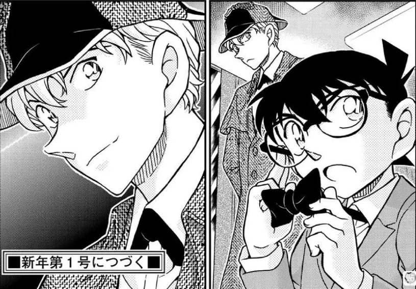

对于日本出版业来说，12月就是新一年开始，这也是为什么1122话（日文）是新年第一号。
在青山再次休刊迎接新年的五周开始之际，我们似乎可以尝试展望朗姆篇的收尾了
一、108卷——朗姆篇的完结
二、黄昏与初遇——感情线两大核心
三、若狭留美、赤井务武与宫野家
四、大冈家、红茶会议与工藤新一的暴露
五、总结
在青山再次休刊迎接新年的五周开始之际，我们似乎可以尝试展望朗姆篇的收尾了
一、108卷——朗姆篇的完结
二、黄昏与初遇——感情线两大核心
三、若狭留美、赤井务武与宫野家
四、大冈家、红茶会议与工藤新一的暴露
五、总结

一、108卷——朗姆篇的完结
米花吧有一篇知名的对柯南漫画进行篇章划分及剧情规律划分的帖子，相信很多人都读过，如果没有的话可以去读一读：【整理在海猿岛后】柯南漫画卷数的12卷、...
这篇帖子用相对严谨的方式给出了以下几个结论：
1.每个篇章结束的标志是下一篇章的核心角色被宣布开始行动
2.除基尔篇以外，每个大篇章的篇幅都是24卷（基尔篇只有12卷）
3.除朗姆篇以外，每个篇章揭露核心角色身份的案件（开头）都在24卷的3/4处，即第18卷（或第9卷）
朗姆篇情况比较特殊。以朗姆篇保持24卷的规律来看，或许由于剧场版影响了主线安排，导致朗姆、黑田、若狭的身份揭露被分别安排在了（100、102、104）3/4附近区间内的三卷里，整体来说依然符合规律
米花吧有一篇知名的对柯南漫画进行篇章划分及剧情规律划分的帖子，相信很多人都读过，如果没有的话可以去读一读：【整理在海猿岛后】柯南漫画卷数的12卷、...
这篇帖子用相对严谨的方式给出了以下几个结论：
1.每个篇章结束的标志是下一篇章的核心角色被宣布开始行动
2.除基尔篇以外，每个大篇章的篇幅都是24卷（基尔篇只有12卷）
3.除朗姆篇以外，每个篇章揭露核心角色身份的案件（开头）都在24卷的3/4处，即第18卷（或第9卷）
朗姆篇情况比较特殊。以朗姆篇保持24卷的规律来看，或许由于剧场版影响了主线安排，导致朗姆、黑田、若狭的身份揭露被分别安排在了（100、102、104）3/4附近区间内的三卷里，整体来说依然符合规律
2024-01-04 20:01 | 1412704013B:基尔篇是多少，48-59吗2024-01-05 00:17 | 比屋定菠萝🎄:回复 1412704013B :602024-01-13 10:56 | aizengin33:波本篇60开始，85结束，跨度整整26卷，不符合24卷规律啊2024-01-13 11:17 | 比屋定菠萝🎄:回复 aizengin33 :仔细读原帖的定义，明确提到下一位组织成员出动才是下一篇章开始的标志，因此波本篇开始是61卷file.8。每篇章结束的位置是该系列的第一节所在卷数，而波本篇结束的标志「绯色篇」第一节是84卷file.11正好卡点，因此波本篇是61-84卷仍符合24卷规律
详细内容可以去看原帖，总之该规律应该是可以被信任的，那么朗姆篇完结的卷数就应该是108卷，即1147——1158话之间会出现为朗姆篇收尾的案件系列（的开头）
那么现在是1122话结束，距离1147话-1158话还差25~36话，朗姆篇的案件平均3.3话
按照这个频率计算，离朗姆篇还剩下8~11个案件左右，大家可以感受一下朗姆篇完结的距离
那么现在是1122话结束，距离1147话-1158话还差25~36话，朗姆篇的案件平均3.3话
按照这个频率计算，离朗姆篇还剩下8~11个案件左右，大家可以感受一下朗姆篇完结的距离
我们再来考虑时间，青山画完朗姆篇需要多久？
2017年后，青山每年更新的章节数量断崖式下滑：
2018 16话
2019 21话
2020 21话
2021 17话
2022 21话
2023 19话
2024 1122——……
正常情况下一年接近2卷的速度，两年内必然可以完结朗姆篇
2017年后，青山每年更新的章节数量断崖式下滑：
2018 16话
2019 21话
2020 21话
2021 17话
2022 21话
2023 19话
2024 1122——……
正常情况下一年接近2卷的速度，两年内必然可以完结朗姆篇
题外话：该帖内有「公布乌丸莲耶的卷数95是整部漫画的3/4」的猜测，我觉得有一定合理性
但95卷看起来不像一个合适的数字，于是我去看了一下寻找玛丽亚篇结尾的话数——1008话！
这个数字看上去不错，按照3/4的规律计算，柯南的最后一话会是1344话
距离1344话还差多少卷呢？105卷结束是1124话，相差220话，一卷11话，正好差20卷！
即柯南漫画正好完结在125卷最后一话！一路算下来居然全都能整除，真的挺巧的（
当然以上纯属瞎想，如果十几年后成真的话请回来叫我预言家
但95卷看起来不像一个合适的数字，于是我去看了一下寻找玛丽亚篇结尾的话数——1008话！
这个数字看上去不错，按照3/4的规律计算，柯南的最后一话会是1344话
距离1344话还差多少卷呢？105卷结束是1124话，相差220话，一卷11话，正好差20卷！
即柯南漫画正好完结在125卷最后一话！一路算下来居然全都能整除，真的挺巧的（
当然以上纯属瞎想，如果十几年后成真的话请回来叫我预言家
2023-12-02 10:26 | ion815279:那這樣柯南不是至少還要10年才會完結2023-12-02 21:55 | 啊啊上胆:漫画的钥匙孔多不了那么多人吧 好像就十个的样子 最多再加五个就十五个？所以大概120卷吧 除非他还加那么多新角色就难说了2023-12-02 22:45 | 比屋定菠萝🎄:回复 ion815279 :有没有可能10年都是乐观（2023-12-02 22:46 | 比屋定菠萝🎄:回复 啊啊上胆 :120卷也有可能，就当最后一个篇章和基尔篇一样是个12卷的小篇章2023-12-03 01:43 | Carr▫:好像我留言的哈哈2023-12-05 07:02 | 千叶梵释天:冈子当真要画到七十岁？2023-12-07 01:23 | 比屋定菠萝🎄:回复 Carr▫ :居然！2023-12-13 03:48 | 贴吧用户_G7DNV8M:大佬分析的太牛了2024-01-04 20:04 | 1412704013B:回复 千叶梵释天 :你想多了，我估计可能要画到170岁

二、黄昏与初遇——感情线两大核心
按照上述朗姆篇的篇幅划分，我们来观察柯哀与新兰两条感情线在朗姆篇内的关键之处：
新兰感情线的危命篇-死罗神-伦敦篇-修学篇这一故事序列中，大家可以明显看出新兰感情的下行趋势，即使他们表面上关系越走越近，但对彼此的关心其实渐行渐远
而近期的红莲骷髅、铃木塔本质上是修学篇的延伸，尽管目前很抽象还看不出什么明显的转变，但新兰感情在交往之后即将走向终点是可以想象的，只是速度比大家期待的会慢得多，至少应该不会在朗姆篇完结之前
按照上述朗姆篇的篇幅划分，我们来观察柯哀与新兰两条感情线在朗姆篇内的关键之处：
新兰感情线的危命篇-死罗神-伦敦篇-修学篇这一故事序列中，大家可以明显看出新兰感情的下行趋势，即使他们表面上关系越走越近，但对彼此的关心其实渐行渐远
而近期的红莲骷髅、铃木塔本质上是修学篇的延伸，尽管目前很抽象还看不出什么明显的转变，但新兰感情在交往之后即将走向终点是可以想象的，只是速度比大家期待的会慢得多，至少应该不会在朗姆篇完结之前
85卷进入朗姆篇之后，青山迅速就画了樱花篇（87卷），离波本篇结尾绯色篇只相差6个案件
青山究竟为什么要画樱花篇？
如果单纯是想画新兰初遇，作为展现作品里「男女主」恋爱关系的桥段，理应是具有独一无二的属性的
结果青山在92卷又画了涟漪篇（新一世良初遇），这一下就让樱花篇失去了独特性
青山究竟为什么要画樱花篇？
如果单纯是想画新兰初遇，作为展现作品里「男女主」恋爱关系的桥段，理应是具有独一无二的属性的
结果青山在92卷又画了涟漪篇（新一世良初遇），这一下就让樱花篇失去了独特性
2023-12-20 07:10 | 小治保在mih:肯定要初遇3⃣️选一个才符合73
而在时光胶囊篇的暗示之后，13年前柯哀初遇也呼之欲出
我认为，既然樱花篇和涟漪篇都是朗姆篇内画的，说不定「初遇」就是青山想要在朗姆篇内点明的一个主题，朗姆篇完结之前大概率会把柯哀初遇的篇章画出来
我认为，既然樱花篇和涟漪篇都是朗姆篇内画的，说不定「初遇」就是青山想要在朗姆篇内点明的一个主题，朗姆篇完结之前大概率会把柯哀初遇的篇章画出来
2023-12-02 10:30 | 贴吧用户_a4DSyME:老师请继续2023-12-02 18:19 | 爆炒风栗:突然有个很乐子的猜想，该不会初遇三选一吧2023-12-02 18:37 | 只为思念☞:回复 爆炒风栗 :三选一也不怕，总不可能眼镜护身符也是烟雾弹吧，2023-12-04 13:49 | 贴吧用户_5e3XaDN:如果朗姆篇在两年内结束，那新志初遇在这两年内就能看到了吗？现在就剩下千叶和苗子的护身符还没发，我猜千苗的护身符是录像带，接着就是新志初遇的回忆。2023-12-12 15:58 | 诩不诩:回复 贴吧用户_5e3XaDN :妙哉，中了回来刀你2023-12-12 23:59 | 小治保在mih:回复 贴吧用户_5e3XaDN :他们的护身符会不会是日本交通法2023-12-20 03:34 | 婆罗洲老斑鸠:回复 小治保在mih :2023-12-23 09:10 | 贴吧用户_0Q8721R:按照4岁初遇、10岁初遇，下一个会不会是15岁初遇，也就是纽约篇的“初遇”？2024-01-02 17:40 | 缕陈好:回复 贴吧用户_5e3XaDN : 我觉得千苗发不发都无所谓了，剧情中互相救了一次，而且千苗的重逢刻画的真不错。青山真要是强迫症犯了每个cp都要有一个的话，可能也不是录像带，毕竟白林那边“空降”了一个国际象棋护身符，剧情上来说可能樱花当护身符更贴合一点？我现在更期待千速和重悟


在朗姆篇完结的1147-1158话之前有一个关键数字，即1144
大家都知道新一的代表数字是1，志保的代表数字是4。非常爱玩数字梗的青山很可能会在朗姆篇完结前的这一话做点文章，说不定就是柯哀初遇呢？
大家都知道新一的代表数字是1，志保的代表数字是4。非常爱玩数字梗的青山很可能会在朗姆篇完结前的这一话做点文章，说不定就是柯哀初遇呢？
2023-12-20 03:34 | 婆罗洲老斑鸠:明年年底

三、若狭留美、赤井务武与宫野家
对于柯哀初遇，大家经常能联想到同样是13年前樱花篇——的那个窗边的神秘女人
这里究竟是不是伏笔目前还很难判断，不过确实根据扶着窗户的手势，衍生出了这一女人是若狭、进而若狭在13年前与志保有联系的猜测，这就顺便解答了为什么哀给若狭发金水的疑惑
对于柯哀初遇，大家经常能联想到同样是13年前樱花篇——的那个窗边的神秘女人
这里究竟是不是伏笔目前还很难判断，不过确实根据扶着窗户的手势，衍生出了这一女人是若狭、进而若狭在13年前与志保有联系的猜测，这就顺便解答了为什么哀给若狭发金水的疑惑
在羽田浩司案之后，若狭留美这个朗姆篇的核心角色仍然谜团重重
而赤井务武的下落也一直不明，但青山又给他们之间建立了联系，因此就有一并揭晓（过去那段经历）的可能
恰好赤井家与宫野家又有关系，那么宫野夫妇的死亡、若狭、务武之间或许全都能联系起来
而赤井务武的下落也一直不明，但青山又给他们之间建立了联系，因此就有一并揭晓（过去那段经历）的可能
恰好赤井家与宫野家又有关系，那么宫野夫妇的死亡、若狭、务武之间或许全都能联系起来
直播！
宫野家和药厂又指向另一条线索：伊织无我
很早日本网友就指出伊织可能存在的药品管理官（公安）身份：网页链接
目前我们只知道伊织曾经做过公安，但具体的行动目标未知
提到药品相关，我们自然会联想到白鸠制药、宫野家等要素
再加上无论是原作漫画还是剧场版（M21和可以展望的M27），红叶伊织登场的案件就一定见不到哀，这不得不让人对他们之间是否存在特殊关系浮想联翩
很早日本网友就指出伊织可能存在的药品管理官（公安）身份：网页链接
目前我们只知道伊织曾经做过公安，但具体的行动目标未知
提到药品相关，我们自然会联想到白鸠制药、宫野家等要素
再加上无论是原作漫画还是剧场版（M21和可以展望的M27），红叶伊织登场的案件就一定见不到哀，这不得不让人对他们之间是否存在特殊关系浮想联翩
是直播！！！cy
四、大冈家、红茶会议与工藤新一的暴露
而大冈家无论是政治背景，还是飞机、京都等要素，都或多或少暗示其与组织可能存在关联
在这一条件下，红叶已经开始注意柯南与新一这件事就非常微妙：【剧情推理】红黑两方识破柯南身份—新哀...
自修学篇开始，青山似乎就一直在铺垫工藤新一的身份真正暴露，很可能会将其作为朗姆篇结尾的爆点使用
而大冈家无论是政治背景，还是飞机、京都等要素，都或多或少暗示其与组织可能存在关联
在这一条件下，红叶已经开始注意柯南与新一这件事就非常微妙：【剧情推理】红黑两方识破柯南身份—新哀...
自修学篇开始，青山似乎就一直在铺垫工藤新一的身份真正暴露，很可能会将其作为朗姆篇结尾的爆点使用
与哀暴露柯来救的早期篇章相反，这一次柯在明哀在暗
除了若狭之外没有人注意到哀，而若狭又是被哀发了金水的角色（还有女王的比喻）
那么工藤新一身份暴露的时刻，很可能会将哀设计成反击的关键角色。米花吧也曾有过类似「灰原幕后论」的猜想：【猜想】幕后灰原论 -红色幕布后的一抹灰...
除了若狭之外没有人注意到哀，而若狭又是被哀发了金水的角色（还有女王的比喻）
那么工藤新一身份暴露的时刻，很可能会将哀设计成反击的关键角色。米花吧也曾有过类似「灰原幕后论」的猜想：【猜想】幕后灰原论 -红色幕布后的一抹灰...
提到反击工藤新一暴露，就不得不提修学篇后埋下伏笔至今仍未揭开真面目的红茶会议
它被藏到现在很可能就是它是最后解决工藤新一身份暴露问题的备案
哀如果也参与了红茶会议的策划，就能将她与若狭这条线与工藤新一暴露这个问题和工藤夫妇、赤安等角色全部串联起来
它被藏到现在很可能就是它是最后解决工藤新一身份暴露问题的备案
哀如果也参与了红茶会议的策划，就能将她与若狭这条线与工藤新一暴露这个问题和工藤夫妇、赤安等角色全部串联起来
五、总结
朗姆篇大概率会在两年内收尾
新兰的感情线在朗姆篇中走向黄昏
而柯哀的伏笔似乎即将开始揭晓
在兰、哀、世良三位女主角中，只差哀与柯潜在的初遇篇章没有在朗姆篇中被描绘，希望能在1144话见到，说不定就是明年圣诞（周三）连载呢？
朗姆篇大概率会在两年内收尾
新兰的感情线在朗姆篇中走向黄昏
而柯哀的伏笔似乎即将开始揭晓
在兰、哀、世良三位女主角中，只差哀与柯潜在的初遇篇章没有在朗姆篇中被描绘，希望能在1144话见到，说不定就是明年圣诞（周三）连载呢？
而主线还剩两个亟需解决的重点：
一是若狭的过往、赤井务武的下落、宫野夫妇死亡真相
二是红茶会议、工藤新一的暴露、大冈家与组织的关系，青山有希望将这一切全部串联起来并揭露
朗姆篇结束后，主线将通过朗姆和若狭指向A药的秘密、组织的内幕、Boss的真相
本帖完结
一是若狭的过往、赤井务武的下落、宫野夫妇死亡真相
二是红茶会议、工藤新一的暴露、大冈家与组织的关系，青山有希望将这一切全部串联起来并揭露
朗姆篇结束后，主线将通过朗姆和若狭指向A药的秘密、组织的内幕、Boss的真相
本帖完结
有点等不动了
🔥前留名
很清晰的梳理
老师加油！
cy，十年后回来刀楼主
期待1144
谨慎期待一手明年完结朗姆篇吧。实际上24卷只是一个大概，我没记错的话红黑篇是58、59左右完结的，在24或者12左右波动是很正常的。现在是104卷，距离105卷结束也就两话左右，明年肯定是以106卷的内容为主，107卷占大部分。04年十周年的时候更了满月篇，14年二十周年的时候更了绯色篇，我个人觉得明年朗姆篇应该就差不多结束了。从1109话结束之后，已经更了花园篇，新干线篇，平和篇，白基篇四个日常了，除了新干线篇出现了红叶他爷爷沾点主线，其他的少见的基本没有什么主线。这个放在目前柯南连载的规律上已经很反常了，倒不如说给接下来的剧情先铺个路，缓冲一下。明年30周年青山绝对要搞大动作。还有个点就是目前a药重新回到主线中心，近几十话里被提及的次数已经有些反常的多了
2023-12-03 04:35 | 世界上没有真理:朗姆篇沒這麼快，至少要到2025年才有可能2023-12-16 07:40 | 古道西风瘦牛18:满月篇是单行本42卷是2003年画的。单纯用创作卷数或者周年去找规律没有太大意义。
不懂就问，青山现在60来岁，不是我咒他，现在他自己有信心自己有生之年把漫画画完吗，如果他si前没画完漫画咋办
2023-12-03 06:43 | 贴吧用户_GD91SQ6:交给助手，那助手是个激进柯哀党2023-12-03 07:45 | 比屋定菠萝🎄:回复 共此凉热 :这种事谁也不知道（2023-12-06 11:16 | 贴吧用户_QCX38GS:73身体没什么太大问题吧，我看他状态还挺好的啊2024-01-04 20:17 | 1412704013B:他死不了，画到170岁应该不是问题2024-01-10 10:42 | 把哈哈:所以他就是乌丸莲耶么2024-01-10 10:43 | 把哈哈:他不会死的，他吃了A药
其实我感觉朗姆篇完结应该是m30。
2023-12-03 02:28 | 咿哈来啦:如果是和决战并行推进一部分的话倒是有可能2024-01-22 19:22 | Chem_:m30是♦️4，哀大概率要上大号，节点来看得是boss篇才合适了吧
话说最近73和东野圭吾的谈话聊到了柯南时间线的事情，按照73的想法，他还是很明确表示控制在半年左右，而小兰的生日还没用上，将来会用……
毕竟涉及的篇章还是太多了……个人对这个时间不太敏感……目前从漫画时间角度来看大约处在什么时间季节呀？感觉这个对后续主要角色生日以及情感故事线会有不小影响……主线的推进也会受名柯故事内的时间影响。
毕竟涉及的篇章还是太多了……个人对这个时间不太敏感……目前从漫画时间角度来看大约处在什么时间季节呀？感觉这个对后续主要角色生日以及情感故事线会有不小影响……主线的推进也会受名柯故事内的时间影响。
2023-12-03 10:08 | 比屋定菠萝🎄:我见别人无数次尝试理清漫画时间线和季节都失败了，反正修学篇是11月（2023-12-03 11:19 | 咿哈来啦:回复 比屋定菠萝🎄 :主要73在这个谈话里表示圣诞节和情人节已经被他用了，这一下搞的好乱2023-12-04 19:37 | 解毒剂😄:……
回复 咿哈来啦 :你要算恋爱线那时间轴肯定乱如麻，我都不知道半年内是怎么做到一月中变小、情人节开箱柯南、满月篇、过寒假这几件事的。以酒厂线为主轴会好一点2023-12-12 16:06 | 诩不诩:哀酱的生日是不是也没，19 20岁的生日录音还没见着。妈呀怎么这么多坑，73他填的完吗2023-12-13 00:03 | 咿哈来啦:回复 诩不诩 :73会记下他的坑，想一次性多填一堆坑也不是不行，看他咋想了2024-01-04 20:19 | 1412704013B:回复 诩不诩 :这个没关系的，毕竟73叫73，寿命后面加个0是比较保守的，活到730，漫画画到海枯石烂2024-01-10 10:46 | 把哈哈:小兰如果要过生日，作为男朋友的新一就必须上线。然后为了庆祝，小五郎大手一挥点了高级寿司外卖。接着，厨师过来送外卖…


明年希望可以看见工藤新一（点头）
对@比屋定菠萝🎄 使用破旧的挽尊卡挽回他的尊严！效果：柯哀分析文吧经验+1
刚看完全文+参考文献+参考的参考，只能说对紧急补完一千话以后内容的我而言真是头大（）
插个眼
插个眼
插眼
cy
18年16话
19年21话
20年21话
21年17话
22年21话
23年21话
24年能画23话的话，结合圣诞梗和扑克梗，然后发现圣诞节是星期三，青山不会真要在1144话整大活吧
19年21话
20年21话
21年17话
22年21话
23年21话
24年能画23话的话，结合圣诞梗和扑克梗，然后发现圣诞节是星期三，青山不会真要在1144话整大活吧
cy
cy
假如是125卷结束，也就是只剩一个半篇章了？那我猜一波黑衣组织并未彻底清理，boss真正的目的是找到银色子弹终结已经脱离他控制的黑衣组织。然后boss就像以前黑手党之类的，洗白后以某个集团存在。这样贝尔摩德就不会与红方为敌，琴酒估计最后要凉

cy
cy
休刊10周今年是不太可能了，除非下半年 青山爆发更新，但是概率很低。